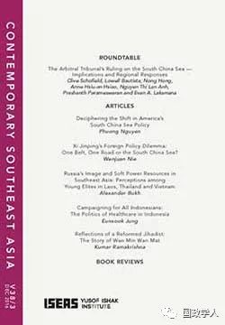
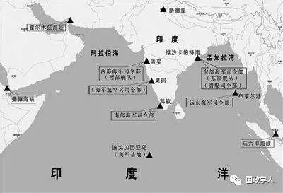

收录于合集

简 介
【作者简介】
巴杰帕伊 （Chietigj Bajpaee），为伦敦国王学院战争研究及新加坡国立大学政治学习双联博士学程的博士候选人。
【整理】 高嘉琳
【文章来源】
Dephasing India’s Look East/Act East Policy，Contemporary Southeast Asia, August, 2017, Volume, Issue 2, pp348-372
【期刊介绍】

Contemporary Southeast Asia视为每年出版三期的学术期刊，主要关注东南亚、亚太地区发展趋势的分析，着眼于东南亚国家国内政治、地区建筑、军事、战略及地区安全事务、以及强权间关系消长。
ISSN: 0129-797X
【期刊网址 】
https://bookshop.iseas.edu.sg/journal-details/cs
【审核】 李逸成 庞林立
【提纲】
Abstract
Launching Look East
From Phase One to Phase Two
Phase Three: Act East
Conclusion
** ****【Abstract】 ******
印度「东望政策」于1990年代被提出，期提升东南亚国家在对外政策议程上的战略重要性。此政策普遍被认为分为许多阶段，以印度与地区互动关系的消长作为阶段推进的界定标准。然而，政策阶段过渡是否真的可以反映印度和东南亚地区互动的实际状况？阶段性描述是否和印度自冷战后在东南亚地区的涉入情形有任何关联？本文将解析印度东望、东进政策，并探究印度「东进」是否可被视为线性发展过程。
【关键词】 Indian foreign policy, Look East, Act East, Southeast Asia, ASEAN
正文

东望政策的提出【Launching Look East】
印度于1990年代提出东望政策，以期提升东南亚国家在对外政策议程上的战略重要性。而在冷战后，印度、东南亚国家互动模式和先前的差异在于以历史、文化、意识形态相似性为基础，建立地区间的经济依赖、政治参与行为，并整合地区安全利益。就此而言，与其将印度提出的东望政策视为recalibration，不如看作reincarnation，重视于东南亚地区实际参与行为，而非仅提倡「第三世界的团结」。
东望政策缘起仍有争议，不过1992年印度与东盟对话机制的建立被广泛认为是其雏形。东望政策是由印度总理Narasimha Rao于1994年拜访新加坡，发表希望于东南亚地区促进新伙伴关系的演讲时所提出（当时尚未使用「东望」这个词汇）。虽然在1992–1993年的年度报告中，印度外交部提及「印度决定提出相应政策以推进与东盟间的关系」，但「东望政策」是到1995–1996的年度报告中才首次被正式使用。然而早在1980年代，似东望政策的「东向命运」便已被提出。
本段后半部分，本文作者分从印度政府内部观点，及外部因素影响讨论：
一、 印度政府内部观点 ：此部分提及印度对于东南亚地区态度的转变，以及印度外交政策的再定位，并指出东望政策在印度外交政策重要性的提升。
二、 外部因素影响 ：此部分指出新加坡在新德里对于东南亚地区态度、政策的转变上具促进作用。并就东盟自1990年代的发展、扩员作简要叙述；亦讨论越南、缅甸、印尼、泰国、马来西亚等国加入东盟对于印度的意涵及影响。
东望政策第一、二阶段【From Phase One to Phase Two】
数名政策制定者及学者分就印度东望政策第一、第二阶段（或第一、第二个十年）的差异作出界定——1990年代以提升与东南亚地区的贸易及投资上互动关系为主要目的；2000年代印度在当地事务的参与获得进展，且合作关系逐步制度化。东盟–印度于2002年峰会层级伙伴关系的开展；2003年于巴厘峰会提出三大协议，一般被视为第二阶段的开始，显现出印度与东盟间分别在经济、安全议题、政治上关系的逐步加深；并由印度官方、民间学者的观点检视东望政策由第一阶段发展至第二阶段对于印度，及其与东盟间关系的影响及变化。
接着本文作者将后半段分为「东望政策一、二阶段之剖析」、「东望政策一、二阶段之界定」两部分讨论：
一、东望政策一、二阶段之剖析：各方对于东望政策一、二阶段的解读存在诸多模糊、不一致之处，甚至许多被视为第二阶段所提出的概念早在第一阶段便已出现。后作者分述印度与东盟国家的互信关系、对缅甸军政府的态度转变、印度与东盟经济合作、互动的意涵，及印度最初希望藉东望政策涉入东南亚事务的意义。
此外，印度、东南亚地区互动关系的一、二阶段反应印度涉入东南亚地区事务程度的转变以及背后意涵。本文作者在此部分提出自1990年代至2000年代印度核武问题、经济危机等时间造成印度、东盟互动关系消长的状况，并总结东亚、亚太地区对于印度东望政策的重要性。
二、东望政策一、二阶段之界定：纵观而言，印度与东盟的互动关系已有实质进展，可作为佐证的便是双方贸易往来的增长——从1990年到2000年，印度、东盟贸易额成长了几乎200（%），约由24亿美元成长至71亿美元；2000年到2010年的增长更是超过500（%），至几乎为440亿美元的贸易额。此外，本文作者指出，在东望政策第一阶段，主要关注于经济层面的推展，到了第二阶段才渐提升政治、安全议题上的互动，后大致总结双方互动的推进应有赖于东盟制度化的确立、自由贸易协议加深经济互动关系、基于战略伙伴关系在安全议题上的合作等方面的进展；并探究印度官方以经济议题作为东望政策第一阶段主要关注点，降低各界可能引起的疑虑，于东南亚地区涉入程度提高后再进入第三阶段的东进政策。
从东望政策到东进政策【Phase Three: Act East】
2014年5月，印度总理Narendra Modi胜选；同年11月，Modi在东盟–印度于缅甸的第十二届峰会上正式提出东进政策，被视为印度东望政策第三阶段之始。他表示，印度将会同时修正涉外、以及国内改革的进程：「印度国内将迎来经济发展、工业化及贸易的新时代；涉外事务上，『东望政策』将正式转变为『东进政策』」；更指出此为「印度将东南亚地区视为优先的反映」。
本文作者提及，在东进政策下，印度政府提出「邻国优先政策」以提升于邻近地区事务的涉入程度。以「东进」取代「东望」意味着印度政府对于地区事务将采取更为主动、行为导向的模式，推动以安全议题为优先的地区整合。
而印度东望/东进政策的调整，显示出国家外交政策与国内发展的高度连结。此以发展为导向的议题注重于增强包含基础设施、人际网络、贸易等层面的关系程度。此外，因为对于东进政策推进伙伴关系、促进经济发展有所助益，Modi亦着重与海外印度社群的联系；另根据M.Ganapathi所言，Modi也试图提升印度软实力，欲透过瑜伽推广、那烂陀大学（Nalanda University）复兴加强其对于周遭地区的文化的影响。另外，就战略层面而言，便由印度海军保证印度在贸易、资源等方面上的利益，并确保其于海上的主动权。
同时，东进政策着眼于地缘层面，反复强调印太地区应作为地区战略核心位置。「印太」反映南亚/印度洋、东亚/西太平洋地区间关系紧密程度的不断提升，且与东南亚/南海地区形成单一战略系统，并位于核心地区，此战略系统亦显示中、印以海权为导向，企图拓展自身影响范围。而就东进政策中，印度以太平洋作为目的的意图可由印度与日本、澳洲互动关系渐趋频繁的情况得知，以此为基，后本文作者就「印太」对于印度东进政策意涵、实际状况略作分析。
后半部分，本文作者指出尽管印度东进政策呼声好，然而印度涉外参与的提升，并不完全是在东望政策第三阶段—东进政策才获进展，并就其所面对的状况、挑战略作讨论：
一、就东进政策提出，以推动地区整合作为目标的意图来看，其实早在东望政策一、二阶段便已推展，而非始于东进政策提出后。距离而言，尽管印日关系在东进政策下有显著进展，然早在东望政策时期，印度便开始加强与日本间政经，以及战略互动关系，印澳关系亦然。
二、尽管在东进政策的推动之下，印度与邻国间的关系据说已达新里程碑，然而印度仍非地区性强权。就经济层面来说，印度虽欲推展地区经济整合，然其仅为东盟第九大贸易伙伴，且甚至未能整合至地区制造业的供应链体系中。
本文作者指出，挑战之一为东进政策对于国内经济改革的现况，使得与东亚经济整合进程的速度放缓，并以印度国内过去保护主义政策、国内长期官僚体系状况等问题作为例证。东进政策所面临的另一挑战是为其他地区强权所提出的政策降低了其对于邻国的吸引力，例如中国的「一带一路」、美国的「亚洲轴心」等。此外，广泛推展战略计划，着眼于整合印度洋地区至太平洋地区的愿景使东进政策目标范围过广，而缺乏地缘、战略核心处。
结论【Conclusions】
本文旨在解析印度东望政策各阶段成果，并检视印度对于东南亚地区的「再涉入」，是否和后冷战时期的政策有所相似处。总结来说，印度涉入邻近地区事务的行为，就东望政策各阶段来检视，并非仅是线性推展。此外，被认为是在后期提出、推动的作为，其实在东望政策前期就已开始计划、实行。因此，尽管将印度东望政策分个阶段检视可促进接触者了解印度自1990年代向东发展的大致情形，但无法切实反映印度自冷战后与东南亚地区关系的变化消长。
扫描下方二维码查看原文pdf
更多阅读
国政学人 （ID：guozhengxueren)
为方便学人及时阅读高质量文章
别忘把国政学人设置 星标 哦~


国政学人
支持学术公益与知识传播
微信扫一扫赞赏作者 __赞赏
已喜欢，对作者说句悄悄话
取消 __
发送给作者
发送
最多40字，当前共字
上一页 1/3 下一页
长按二维码向我转账
支持学术公益与知识传播
受苹果公司新规定影响，微信 iOS 版的赞赏功能被关闭，可通过二维码转账支持公众号。